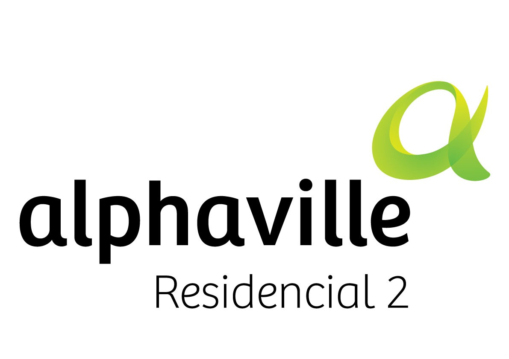
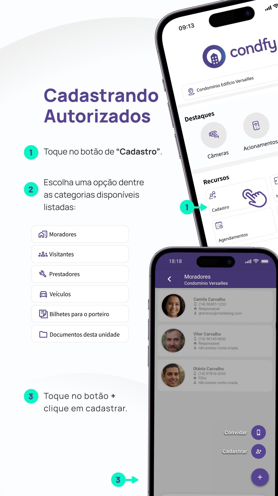
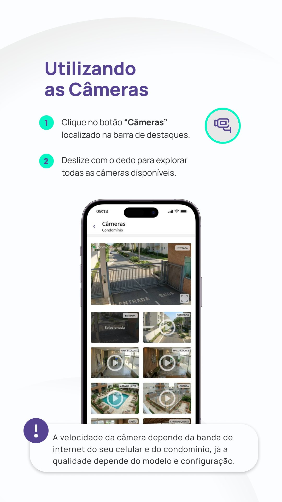
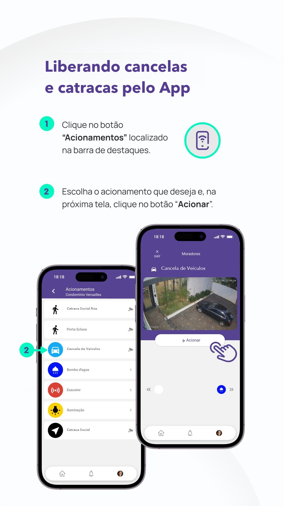
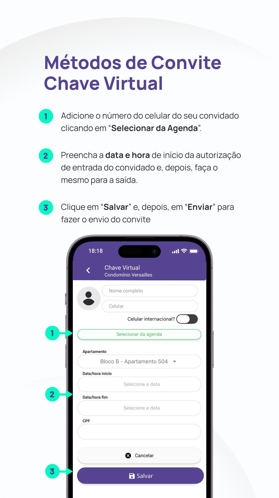
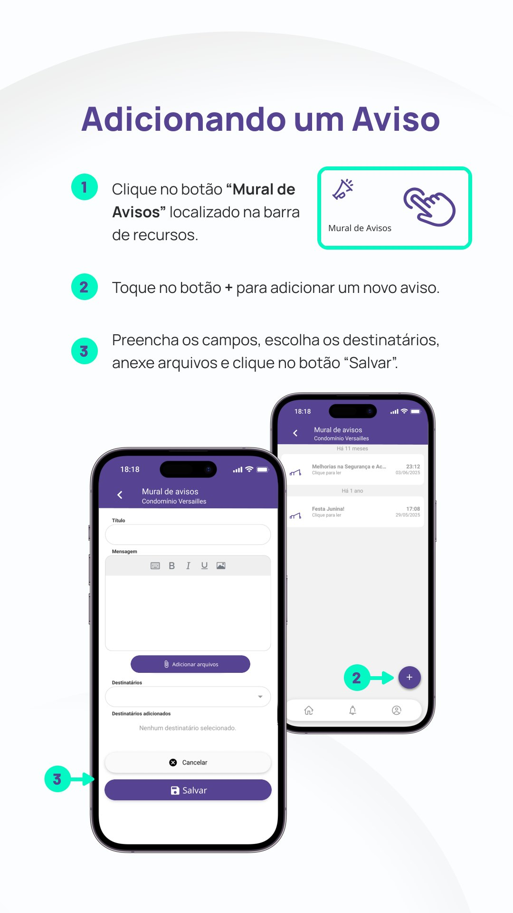
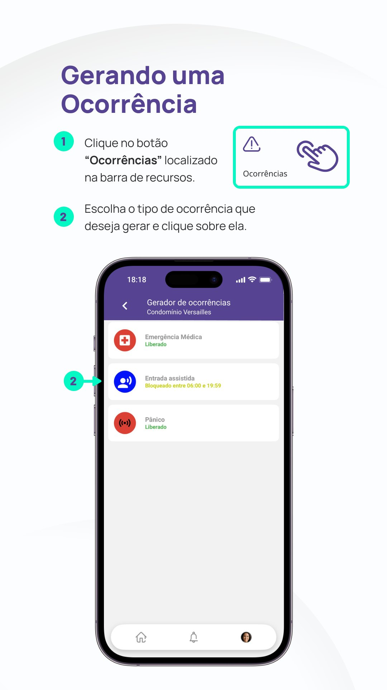
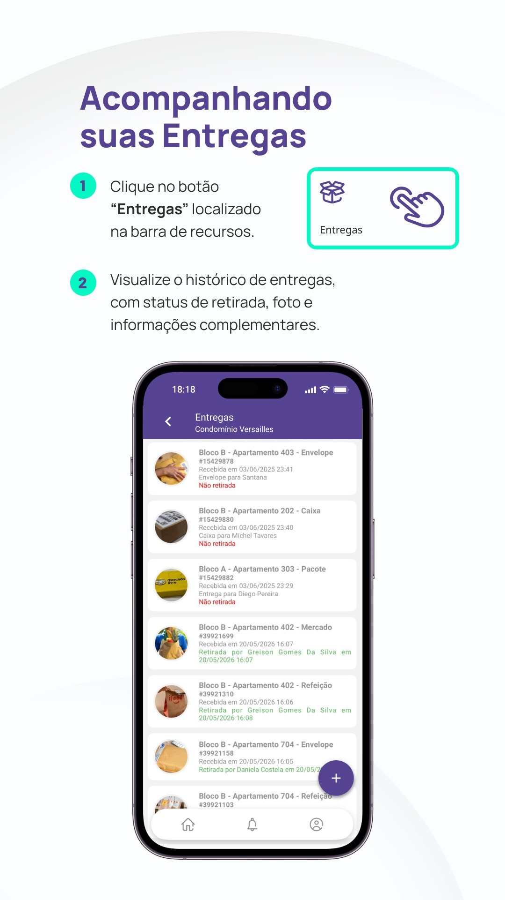
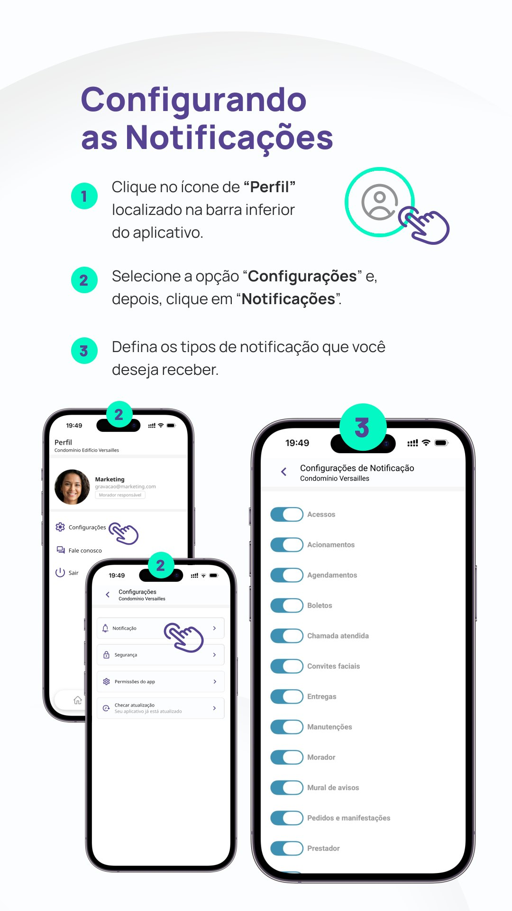

Proposta ao Conselho Técnico e Administrativo
Migração do InControl Web para a plataforma Condfy

Onde estamos hoje
Software de gestão usado pela portaria e pela administração para cadastrar e liberar acessos.
Visitantes, prestadores e entregas passam por ligação ou mensagem ao porteiro.
Avisos, reservas e solicitações correm por WhatsApp, e-mail ou papel, fora do sistema de acesso.
A+.com Engenharia e Tecnologia · Alphaville Residencial 2
A proposta
Plataforma em nuvem: portaria, administração e moradores no mesmo sistema
Integra com Intelbras, Control iD, Hikvision e outras marcas de equipamentos
Adequada à LGPD, com dados criptografados e encarregado (DPO) designado
Mais de 15 mil empreendimentos e 1 milhão de usuários no app, segundo o fabricante
Fonte: condfy.com.br, consultado em 06/11/2026
Antes e depois
| Situação | Hoje · InControl Web | Com o Condfy |
|---|---|---|
| Receber uma visita | Ligar ou mandar mensagem à portaria | Convite pelo app: QR Code, chave virtual ou facial |
| Passar na cancela ou catraca | Tag, controle ou porteiro | Também pelo botão “Acionar” no app |
| Cadastrar a face | Presencial, na administração | Autocadastro com foto pelo app |
| Reservar área comum | Contato com a administração | Agenda no app, com lista de convidados |
| Saber quem entrou | Consulta à portaria | Histórico e notificação em tempo real |
| Avisos e pedidos | Canais separados | Mural e pedidos no app, com status |
Coluna “Hoje”: validar com a administração antes da apresentação
Visão geral
Primeiro acesso
Autorizados
Acesso facial
Câmeras
Acionamentos
Convites
Agendamentos
Mural de avisos
Pedidos
Ocorrências
Entregas
Histórico e alertas
Fonte: Guia do Usuário Condfy, versão 6.0
01 · Primeiro acesso
1
Recebe o convite da administração por SMS, e-mail ou WhatsApp
2
Cria o usuário pelo link: nome, e-mail pessoal e senha
3
Baixa o app e entra com o mesmo e-mail e senha
Guia do Usuário Condfy 6.0 · págs. 3 a 6
02 · Autorizados
1
Em Cadastro, escolhe a categoria: moradores, visitantes, prestadores ou veículos
2
Toca em + Cadastrar, preenche os dados e inclui a foto
3
Ou usa + Convidar para outro morador criar o próprio login

Guia do Usuário Condfy 6.0 · págs. 7 a 10
03 · Acesso facial
1
Seleciona o morador que ainda não tem foto cadastrada
2
Toca em Acesso por face e envia a foto para o leitor facial
3
O condomínio define a aprovação: imediata ou com mediação
Guia do Usuário Condfy 6.0 · págs. 11 e 12
04 · Câmeras
1
Toca em Câmeras, na barra de destaques
2
Desliza o dedo para ver todas as câmeras disponíveis
3
O condomínio escolhe quais câmeras cada perfil pode ver

Guia do Usuário Condfy 6.0 · págs. 13 e 14
05 · Acionamentos
1
Toca em Acionamentos, na barra de destaques
2
Escolhe o ponto, como a cancela de veículos ou a catraca de pedestres
3
Confere a imagem e toca em Acionar

Guia do Usuário Condfy 6.0 · págs. 19 e 20
06 · Convites
| Método | Como o visitante entra |
|---|---|
| Chave virtual | Recebe um link no WhatsApp e libera a cancela ou a catraca no horário marcado |
| QR Code | Mostra o QR Code recebido ao leitor da entrada |
| QR Scanner | Aponta o celular para o QR Code fixado no local |
| Facial | Envia uma selfie e passa pelo leitor facial |
| Avisar portaria | Nome na lista enviada à portaria, com dia e hora |

Em todos: data e hora de entrada e saída definidas, e o morador é avisado da chegada
07 · Agendamentos
1
Em Agendamentos, toca em + e escolhe o espaço
2
Seleciona data e horário livres e confere o resumo
3
Monta a lista de convidados, que vai direto ao porteiro
4
Acompanha o status; espaços com aprovação geram aviso
Guia do Usuário Condfy 6.0 · págs. 15 a 18
08 · Comunicação
Avisos gerais ou por unidade, com anexos e registro de quem leu
Solicitações ao síndico com fotos, acompanhadas por status

Guia do Usuário Condfy 6.0 · págs. 33 a 36
09 · Ocorrências
1
Toca em Ocorrências, na barra de recursos
2
Escolhe o tipo: pânico, emergência médica, entrada assistida, elevador parado e outros
3
O alerta chega direto ao operador, local ou remoto

Guia do Usuário Condfy 6.0 · págs. 37 e 38
10 · Entregas
1
A portaria registra a encomenda e o morador é notificado
2
Em Entregas, vê foto, quem recebeu e quem retirou
3
Opcional: armários e compartimentos com acesso exclusivo do destinatário

Guia do Usuário Condfy 6.0 · págs. 39 e 40
11 · Histórico e notificações
Tag, controle, face ou liberação da portaria, em tempo real
O morador escolhe o que quer receber, em Perfil › Configurações

Guia do Usuário Condfy 6.0 · págs. 41 a 45
No dia a dia do morador
Imagens ao vivo das câmeras liberadas, de onde estiver
Notificação quando a encomenda chega, com foto e retirada
Pedidos à administração com foto, acompanhados por status
QR Code, chave virtual ou facial, sem ligar para a portaria
Áreas comuns com data, horário e lista de convidados
Libera o acesso com um toque e vê o histórico da unidade
A+.com Engenharia e Tecnologia · Alphaville Residencial 2
Para o conselho
Cada convite, acionamento e entrada fica registrado com usuário, data e hora
Menos ligações e cadastros manuais; o porteiro foca na segurança
Avisos, reservas, pedidos e entregas em um sistema, acessível de qualquer lugar
Nuvem com criptografia e conformidade com a LGPD declarada pelo fabricante
A+.com Engenharia e Tecnologia · Alphaville Residencial 2
Os equipamentos e a equipe ficam; muda a forma de liberar, comunicar e acompanhar.
[Nome do responsável]
[Cargo]
[telefone] · [e-mail]